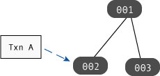
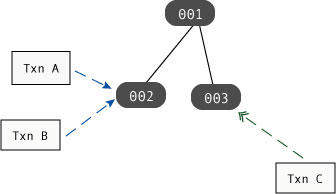
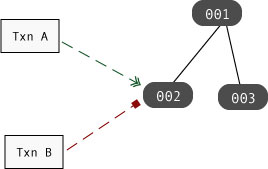
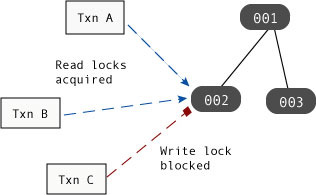
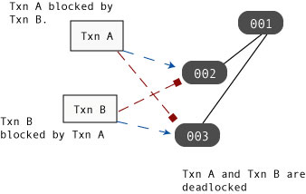

Locks, Blocks, and Deadlocks
It is important to understand how locking works in a concurrent application before continuing with a description of the concurrency mechanisms DB makes available to you. Blocking and deadlocking have important performance implications for your application. Consequently, this section provides a fundamental description of these concepts, and how they affect DB operations.
Locks
When one thread of control wants to obtain access to an object, it requests a lock for that object. This lock is what allows DB to provide your application with its transactional isolation guarantees by ensuring that:
no other thread of control can read that object (in the case of an exclusive lock), and
no other thread of control can modify that object (in the case of an exclusive or non-exclusive lock).
Lock Resources
When locking occurs, there are conceptually three resources in use:
The locker.
This is the thing that holds the lock. In a transactional application, the locker is a transaction handle. For non-transactional operations, the locker is a cursor or a DB handle.
The lock.
This is the actual data structure that locks the object. In DB, a locked object structure in the lock manager is representative of the object that is locked.
The locked object.
The thing that your application actually wants to lock. In a DB application, the locked object is usually a database page, which in turn contains multiple database entries (key and data). However, for Queue databases, individual database records are locked.
You can configure how many total lockers, locks, and locked objects your application is allowed to support. See Configuring the Locking Subsystem for details.
The following figure shows a transaction handle, Txn A, that is holding a lock on database page 002. In this graphic, Txn A is the locker, and the locked object is page 002. Only a single lock is in use in this operation.

Types of Locks
DB applications support both exclusive and non-exclusive locks. Exclusive locks are granted when a locker wants to write to an object. For this reason, exclusive locks are also sometimes called write locks.
An exclusive lock prevents any other locker from obtaining any sort of a lock on the object. This provides isolation by ensuring that no other locker can observe or modify an exclusively locked object until the locker is done writing to that object.
Non-exclusive locks are granted for read-only access. For this reason, non-exclusive locks are also sometimes called read locks. Since multiple lockers can simultaneously hold read locks on the same object, read locks are also sometimes called shared locks.
A non-exclusive lock prevents any other locker from modifying the locked object while the locker is still reading the object. This is how transactional cursors are able to achieve repeatable reads; by default, the cursor's transaction holds a read lock on any object that the cursor has examined until such a time as the transaction is committed or aborted. You can avoid these read locks by using snapshot isolation. See Using Snapshot Isolation for details.
In the following figure, Txn A and Txn B are both holding read locks on page 002, while Txn C is holding a write lock on page 003:

Lock Lifetime
A locker holds its locks until such a time as it does not need the lock any more. What this means is:
A transaction holds any locks that it obtains until the transaction is committed or aborted.
All non-transaction operations hold locks until such a time as the operation is completed. For cursor operations, the lock is held until the cursor is moved to a new position or closed.
Blocks
Simply put, a thread of control is blocked when it attempts to obtain a lock, but that attempt is denied because some other thread of control holds a conflicting lock. Once blocked, the thread of control is temporarily unable to make any forward progress until the requested lock is obtained or the operation requesting the lock is abandoned.
Be aware that when we talk about blocking, strictly speaking the thread is not what is attempting to obtain the lock. Rather, some object within the thread (such as a cursor) is attempting to obtain the lock. However, once a locker attempts to obtain a lock, the entire thread of control must pause until the lock request is in some way resolved.
For example, if Txn A holds a write lock (an exclusive lock) on object 002, then if Txn B tries to obtain a read or write lock on that object, the thread of control in which Txn B is running is blocked:

However, if Txn A only holds a read lock (a shared lock) on object 002, then only those handles that attempt to obtain a write lock on that object will block.

Note
The previous description describes DB's default behavior when it cannot obtain a lock. It is possible to configure DB transactions so that they will not block. Instead, if a lock is unavailable, the application is immediately notified of a deadlock situation. See No Wait on Blocks for more information.
Blocking and Application Performance
Multi-threaded and multi-process applications typically perform better than simple single-threaded applications because the application can perform one part of its workload (updating a database record, for example) while it is waiting for some other lengthy operation to complete (performing disk or network I/O, for example). This performance improvement is particularly noticeable if you use hardware that offers multiple CPUs, because the threads and processes can run simultaneously.
That said, concurrent applications can see reduced workload throughput if their threads of control are seeing a large amount of lock contention. That is, if threads are blocking on lock requests, then that represents a performance penalty for your application.
Consider once again the previous diagram of a blocked write lock request. In that diagram, Txn C cannot obtain its requested write lock because Txn A and Txn B are both already holding read locks on the requested object. In this case, the thread in which Txn C is running will pause until such a time as Txn C either obtains its write lock, or the operation that is requesting the lock is abandoned. The fact that Txn C's thread has temporarily halted all forward progress represents a performance penalty for your application.
Moreover, any read locks that are requested while Txn C is waiting for its write lock will also block until such a time as Txn C has obtained and subsequently released its write lock.
Avoiding Blocks
Reducing lock contention is an important part of performance tuning your concurrent DB application. Applications that have multiple threads of control obtaining exclusive (write) locks are prone to contention issues. Moreover, as you increase the numbers of lockers and as you increase the time that a lock is held, you increase the chances of your application seeing lock contention.
As you are designing your application, try to do the following in order to reduce lock contention:
Reduce the length of time your application holds locks.
Shorter lived transactions will result in shorter lock lifetimes, which will in turn help to reduce lock contention.
In addition, by default transactional cursors hold read locks until such a time as the transaction is completed. For this reason, try to minimize the time you keep transactional cursors opened, or reduce your isolation levels – see below.
If possible, access heavily accessed (read or write) items toward the end of the transaction. This reduces the amount of time that a heavily used page is locked by the transaction.
Reduce your application's isolation guarantees.
By reducing your isolation guarantees, you reduce the situations in which a lock can block another lock. Try using uncommitted reads for your read operations in order to prevent a read lock being blocked by a write lock.
In addition, for cursors you can use degree 2 (read committed) isolation, which causes the cursor to release its read locks as soon as it is done reading the record (as opposed to holding its read locks until the transaction ends).
Be aware that reducing your isolation guarantees can have adverse consequences for your application. Before deciding to reduce your isolation, take care to examine your application's isolation requirements. For information on isolation levels, see Isolation.
Use snapshot isolation for read-only threads.
Snapshot isolation causes the transaction to make a copy of the page on which it is holding a lock. When a reader makes a copy of a page, write locks can still be obtained for the original page. This eliminates entirely read-write contention.
Snapshot isolation is described in Using Snapshot Isolation.
Consider your data access patterns.
Depending on the nature of your application, this may be something that you can not do anything about. However, if it is possible to create your threads such that they operate only on non-overlapping portions of your database, then you can reduce lock contention because your threads will rarely (if ever) block on one another's locks.
Note
It is possible to configure DB's transactions so that they never wait on blocked lock requests. Instead, if they are blocked on a lock request, they will notify the application of a deadlock (see the next section).
You configure this behavior on a transaction by transaction basis. See No Wait on Blocks for more information.
Deadlocks
A deadlock occurs when two or more threads of control are blocked, each waiting on a resource held by the other thread. When this happens, there is no possibility of the threads ever making forward progress unless some outside agent takes action to break the deadlock.
For example, if Txn A is blocked by Txn B at the same time Txn B is blocked by Txn A then the threads of control containing Txn A and Txn B are deadlocked; neither thread can make any forward progress because neither thread will ever release the lock that is blocking the other thread.

When two threads of control deadlock, the only solution is to have a mechanism external to the two threads capable of recognizing the deadlock and notifying at least one thread that it is in a deadlock situation. Once notified, a thread of control must abandon the attempted operation in order to resolve the deadlock. DB's locking subsystem offers a deadlock notification mechanism. See Configuring Deadlock Detection for more information.
Note that when one locker in a thread of control is blocked waiting on a lock held by another locker in that same thread of the control, the thread is said to be self-deadlocked.
Deadlock Avoidance
The things that you do to avoid lock contention also help to reduce deadlocks (see Avoiding Blocks). Beyond that, you can also do the following in order to avoid deadlocks:
Never have more than one active transaction at a time in a thread. A common cause of this is for a thread to be using auto-commit for one operation while an explicit transaction is in use in that thread at the same time.
Make sure all threads access data in the same order as all other threads. So long as threads lock database pages in the same basic order, there is no possibility of a deadlock (threads can still block, however).
Be aware that if you are using secondary databases (indexes), it is not possible to obtain locks in a consistent order because you cannot predict the order in which locks are obtained in secondary databases. If you are writing a concurrent application and you are using secondary databases, you must be prepared to handle deadlocks.
If you are using BTrees in which you are constantly adding and then deleting data, turn Btree reverse split off. See Reverse BTree Splits for more information.
Declare a read/modify/write lock for those situations where you are reading a record in preparation of modifying and then writing the record. Doing this causes DB to give your read operation a write lock. This means that no other thread of control can share a read lock (which might cause contention), but it also means that the writer thread will not have to wait to obtain a write lock when it is ready to write the modified data back to the database.
For information on declaring read/modify/write locks, see Read/Modify/Write.